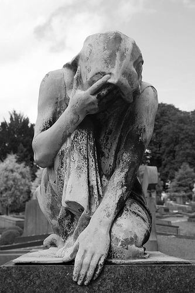
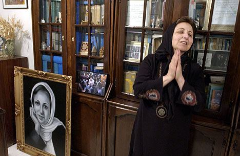
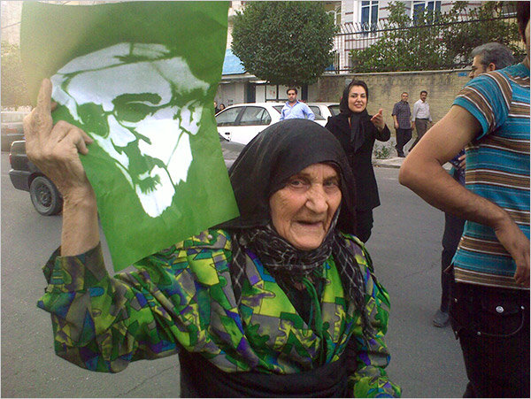
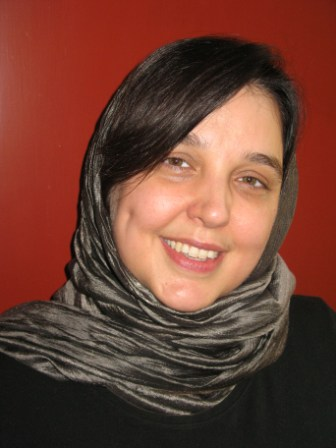
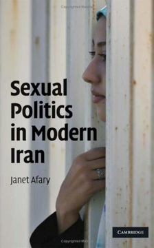
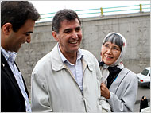
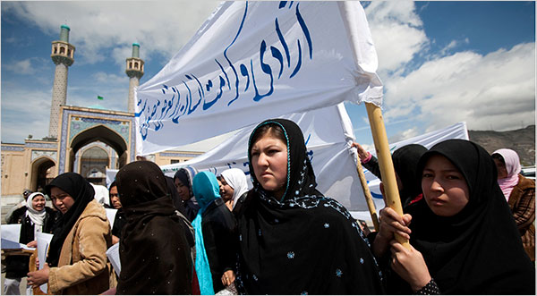
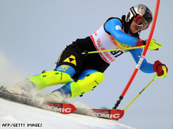
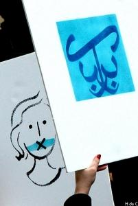

|
|
On the Web
Latest update – Tuesday 23 April 2013.
Articles in this section
- 27 November 2009
- 21 November 2009
- 21 November 2009

- 11 October 2009

By: Elahe Amani with Lys Anzia
- 2 October 2009

- 22 September 2009
- 8 September 2009
- 4 September 2009
Analysis by Sara Farhang
- 4 September 2009

- 22 August 2009
- 22 August 2009
- 1 July 2009

By: Sara Farhang
- 1 July 2009

By: Golbarg Bashi
- 28 June 2009
Elham Gheytanchi
- 22 June 2009
- 8 June 2009

NPR Interview with Sussan Tahmasebi
- 29 May 2009

By: Elahe Amani
- 24 May 2009

WWHR’s Interview with Sussan Tahmasebi of the One Million Signatures Campaign
- 24 May 2009

Excerpts from a new book by Janet Afary
- 22 May 2009

- 11 May 2009

- 5 May 2009
- 3 May 2009

- 28 April 2009

- 19 April 2009
- 16 April 2009

- 4 April 2009

- 26 March 2009

International Campaign for Human Rights in Iran:
- 17 March 2009

- 8 March 2009
|